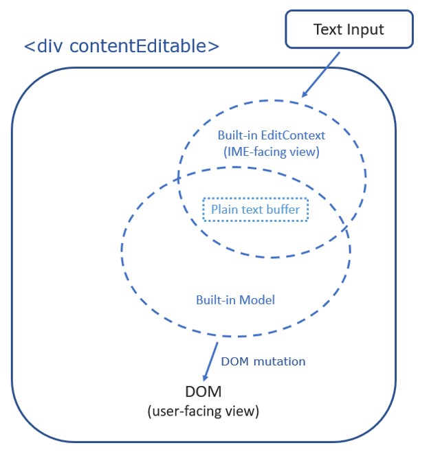
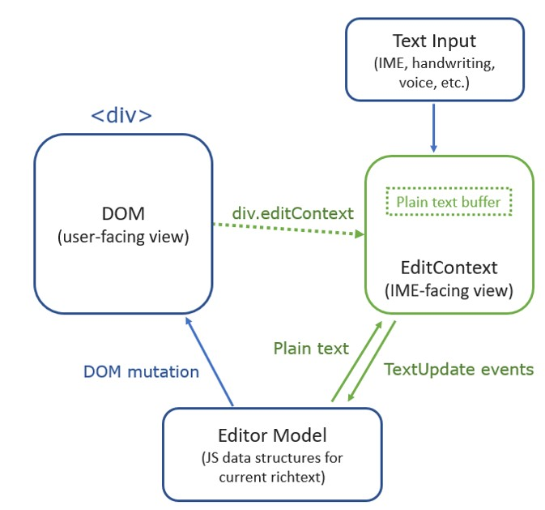

Introduction
Background and Motivation
Modern operating systems provide mechanisms to produce text in a variety of ways: speech-to-text, virtual keyboards, handwriting recognition and many more. When an app wants to consume text input from these various sources, it must first provide a view of its currently editable text to the operating system. The view of editable text provides a common language that apps (having a variety of different document models) and sources of text (having a variety of different input methods) can both understand. Both the apps and input sources communicate with one another by expressing their desired changes to the state of the common view as an event that the other can handle to facilitate the text input process.
For the purposes of this document, a producer of text is known as a Text Input Client. The view provided by an app which wants to consume text is called a Text Edit Context. The service provided by the OS to facilitate the editing of text in the [=Text Edit Context=] by the [=Text Input Clients=] is called a Text Input Service.

Here’s a typical flow for the text input process in more detail:
- A user places focus into an editable region of the app.
- The app produces a [=Text Edit Context=] describing its editable region according to the standards set forth by the [=Text Input Service=] and provides that [=Text Edit Context=] to the [=Text Input Service=].
- The [=Text Input Service=] triggers a [=Text Input Client=] to provide some user interface for capturing text input from the user and provides the [=Text Input Client=] the app generated [=Text Edit Context=].
- The [=Text Input Client=] reads the location of selection and nearby text from the [=Text Edit Context=] to help tailor its user experience.
- The [=Text Input Client=] may also read screen coordinates for where the selection and editable region are located so that it can properly position its user interface next to the text being edited.
- The user interacts with the [=Text Input Client=] user interface to input text in some [=Text Input Client=]-specific way.
- The [=Text Input Client=] describes its desired modifications to the text and selection in the [=Text Edit Context=] in response to the user’s input.
- The app handles an event describing the desired modifications to its [=Text Edit Context=] and renders the result to the user.

Existing user agents handle the details of this text input process so that the author’s responsibility ends at declaring what elements of the document represent an editable region. Authors express which regions are editable using input elements, textarea elements, contenteditable elements, or by setting the designMode attribute to true to mark an entire document as editable.
As an editable region of the document is focused, the user agent automatically produces the [=Text Edit Context=] from the contents of the editable region and the position of the selection within it. When a [=Text Input Client=] produces text, the user agent translates the events against its [=Text Edit Context=] into a set of DOM and style modifications – only some of which are described using existing events that an author can handle.
Authors that want to produce sophisticated editing experiences may be challenged by the current approach. If, for example, the text and selection are rendered to a canvas, user agents are unable to produce a [=Text Edit Context=] to drive the text input process. Authors compensate by resorting to offscreen editable elements, but this approach comes with negative implications for accessibility, it deteriorates the input experience, and requires complex code to synchronize the position of the text in the offscreen editable element with the corresponding text in the canvas.
With the introduction of this EditContext API, authors can more directly participate in the protocol for text input and avoid the pitfalls described above.
The EditContext Model
An {{EditContext}} is a JavaScript projection of the [=Text Edit Context=] concept discussed in the previous section. Using an {{EditContext}}, an author can mark a region of the document editable by associating an instance of an {{EditContext}} with an element.
Associating an {{EditContext}} to an element makes that element intrinsically focusable. When the element is focused, the user agent will use the state of the {{EditContext}} to construct a [=Text Edit Context=] that is provided to the [=Text Input Service=] of the OS:
- Instead of deriving the contents of the [=Text Edit Context=] from the DOM, it will be taken from the {{EditContext.text}} property.
- Instead of deriving the location of selection within that text from the document’s selection, the user agent will use the offsets from the {{EditContext.selectionStart}} and {{EditContext.selectionEnd}} properties.
- Instead of querying the DOM’s associated CSS boxes for the size and position of selection and the editable region of the document, the {{EditContext.selectionBounds}} and {{EditContext.textBounds}} will be used.
The model of a contenteditable element
A contenteditable div can be considered as a div with a built-in EditContext which maintains a plain text buffer that serves as a plain text view (or IME-facing view) to communicate with various text input services (ex. IME, handwriting recognition, speech detection, etc.) When users initiate text inputs, the text input services will update the plain text buffer through the plain text view. The built-in EditContext then sends internal events to the div which takes the plain text buffer as part of its own model and updates the DOM, which serves as a user-facing view, based on some default editing behaviors defined by the brower.
The model of an element with EditContext
When a div is associated with an EditContext, the "external" EditContext takes over the text input. Instead of directly triggering the default manipulation of the DOM, the text input now updates the plain text buffer in the external EditContext. The external EditContext then sends events to JavaScript and web-based editors can listen to the events, updates their own models, and manipulates the DOM per their desired editing experiences.
EditContext only decouples and handles the manipulation of the plain text view coming from the text input services. Manipulation involving the user-facing view (e.g., drag and drop selected text, spell check replacement, up/down arrow keys to move the caret between lines), or manipulation involving formats (e.g., ctrl+B, outdent/indent) are out of scope of EditContext, however, the beforeinput events for these manipulation will still fire on the div to serve as user intent and it'll be editors's responsibility to handle the editing operations.